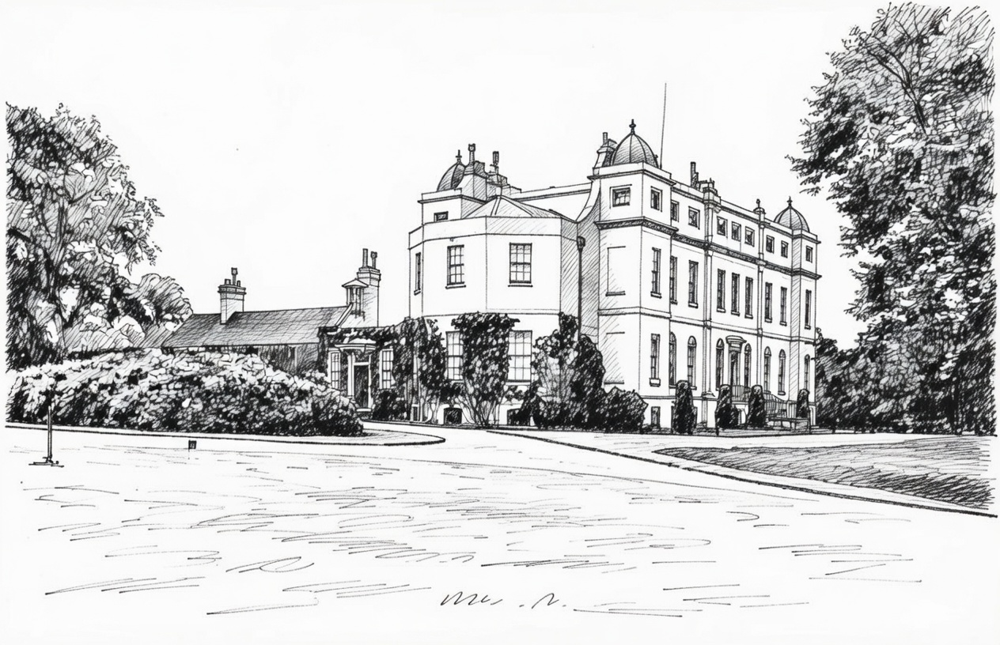
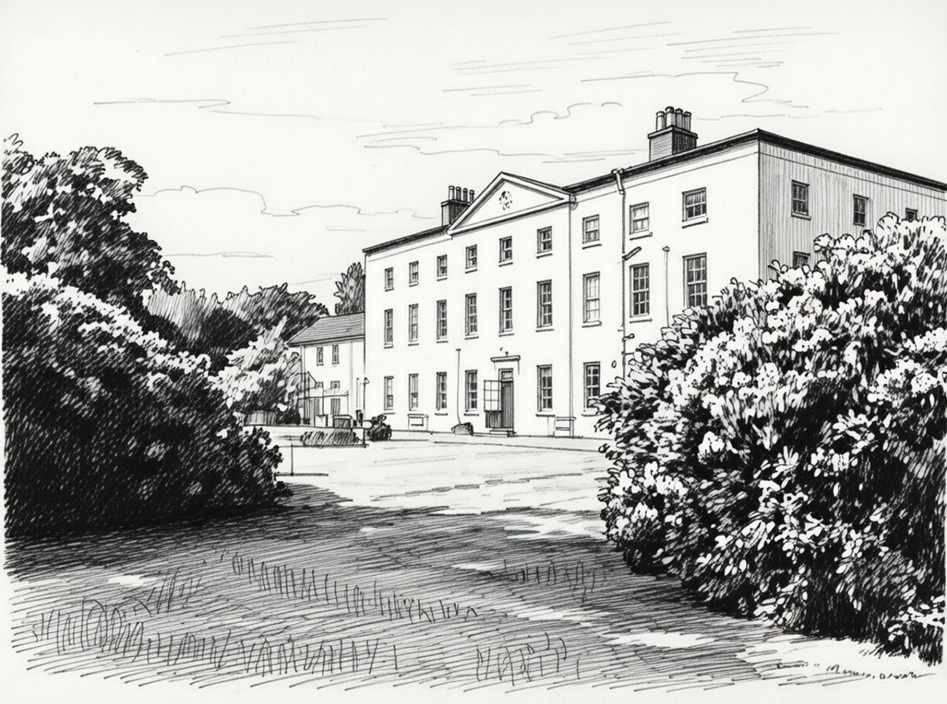

Mount Mascal House and Orleton Hall
Mount Mascal House (also spelled Mount Mascall or Mount Mascal) was a large Jacobean-style mansion built
around 1600 on a hillside overlooking North Cray Road in North Cray (now part of the London Borough of Bexley, Kent).
It was originally named after the Mascal family who constructed it, and the estate included extensive landscaped
parkland, grounds extending to the River Cray and Joydens Wood, lodges, and outbuildings like a dower house and
keeper's cottage. The house had 17th-century origins and was a prominent country residence in the area.

The Holt family (specifically the Vesey-Holt branch, from the military banking family) became associated with the property in the later 19th century. Sir Vesey George Mackenzie Holt, KBE (1854–1923), a banker and military figure, resided there as his family seat. Census and directory records place the family in the Bexley area from at least the 1860s–1870s (Sir Vesey lived earlier at Queenswood in Blackfen before moving to Mount Mascal). He and his wife Mabel Mary Drummond raised their children there, including Martin Drummond Vesey Holt. The family had ties to local institutions, such as Bexley Cricket Club (which used the estate's grounds) and St James' Church, North Cray, where family monuments and graves are located.The Holts lived at Mount Mascal primarily from the late 19th century through the early 20th century. Sir Vesey died in 1923, after which his son Martin briefly returned to the house around 1923 (having occupied a nearby dower house earlier). The estate was broken up and sold in 1957. A fire in October 1949 caused extensive damage, leading to the house's demolition in 1950.
Orleton Hall is a Grade II listed country house and estate near Wrockwardine in Shropshire, England. The site has
ancient origins, with a moated house from 1588 replaced by the current building designed around 1830. The estate
was owned by the Cludde family from the 14th century (name derived from nearby Cluddley/Cludley), passing through
inheritance and name changes (e.g., to Pemberton then Cludde). In 1854, heiress Anna Maria Cludde married Hon.
Robert Charles Herbert (son of the 2nd Earl of Powis), bringing Orleton into the Herbert family.

The Holt family acquired Orleton through marriage in 1918, when Martin Drummond Vesey Holt (from the Mount Mascal line) married Phyllis Hedworth Camilla Herbert (daughter of Robert Charles Herbert and Anna Maria Cludde). This union incorporated the Orleton estate into the Holt family, shifting their primary seat from Kent to Shropshire post-1923 (after Sir Vesey's death). Martin and Phyllis lived there, followed by their son Vesey Martin Edward Holt (b. 1927, d. 2001), who was High Sheriff of Shropshire in 1981, a Deputy Lieutenant, and a governor of Wrekin College. The family has held Orleton since the early 20th century (specifically from 1918 onward, becoming the main residence by the 1920s–1930s).Orleton remains in the Holt family to the present day (current residents include descendants like Peter and Sarah Holt), with the house featuring gardens, a Chinoiserie summerhouse, and an 18th-century landscape park. It is still a private family home and estate.
The banking history of the Holt family, as recorded in sources like Burke's Landed Gentry and NatWest Group heritage records, centers on their role as prominent army agents and bankers specializing in military services. The firm's origins trace to around 1809, when William Kirkland established an army agency in London (initially in Bennett Street, St James's) to manage regimental accounts, distribute pay, handle supplies, pensions, and claims for the British Army—roles that evolved into dedicated banking facilities for soldiers and their families. The first Holt involvement came in 1863 when Vesey Weston Holt (1824–1881), son of William Holt (b. 1790, a banker with military ties), joined as a partner after being appointed agent to the 16th Regiment of Foot; following partnerships and successions, the firm became V.W. Holt & Co. in 1871 and Vesey Holt & Co. from 1881 under his son, Sir Vesey George Mackenzie Holt, KBE (1854–1923), of Mount Mascal, who led it from the 1890s and expanded services. Renamed Holt & Co. by 1883, it built strong links with the Royal Navy (from 1915) and Royal Air Force (from 1918), serving as official agents. Upon Sir Vesey's death in 1923, the business was acquired by Glyn, Mills, Currie & Co. but continued trading separately (moving to Kirkland House in Whitehall in 1930); it was later absorbed into the Royal Bank of Scotland (now part of NatWest Group) in 1939 via Glyn, Mills, while retaining its distinct identity until the 1960s and beyond. Today, Holt's Military Banking operates as a specialized brand within NatWest Group, offering tailored services to armed forces members, veterans, and families since its founding over two centuries ago. Holt & Co. is part of Nat West
Grace's Guide a the leading source of historical information on industry and manufacturing in Britain covers Holt & Co. (of London).